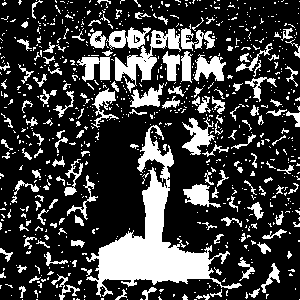

 I've known about Tiny Tim's 1968 album "God Bless Tiny Tim" since around 2016, and oh God, and Jesus Christ is is weird. After all of this time I still don't know if I hate it or not. The album as a whole has this dream-like feel to it. It feels like you're in a place you should not be in, and you're hiding in the dark, hoping that you won't get found out.
Some of the songs even have Tim sing with a woman who happens to just be himself doing a fake female voice, while another is Tim singing as a little boy asking his father what happened to his dead mother (the father also sounds like Elvis). The juxtaposition for this album is quite something.
Is it worth a listen? Sure, but you might like to play it late at night on your own, so it will increase the weird factor.